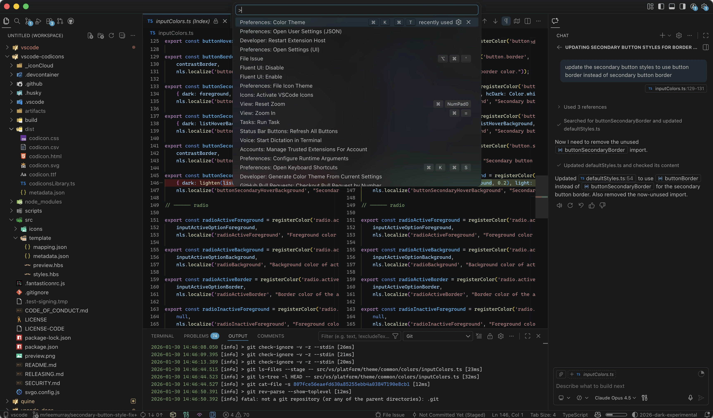

Academic Studies & Skills
An overview of the core Information Technology concepts, coursework, and technical skills I have mastered during my sophomore year at NJIT.
Core IT Coursework
As an IT student at New Jersey Institute of Technology, my coursework focuses on building a strong foundation across multiple technology domains. Key areas of focus include:
- IS 117 - Introduction to Web Development: Modern HTML5 structure, responsive Bootstrap layout design, CSS styling, and Git version control.
- IT 114 - Advanced Programming Concepts: Object-oriented programming principles, control structures, and algorithm design - Java network development.
- CS 100 - Roadmap to Computing: Problem-solving methodology, and computational thinking - Python programming.
- CS 113 - Computer Science I: Fundamentals of computer science and structured software programming - Java programming.
- IT 101 - Introduction to Information Technology: Hardware, software systems, and computing infrastructure principles.
- IT 120 - Introduction to Network Technology: Networking protocols, architectures, and data communications - CompTIA.
- IT 201 - Information Design Techniques: Event-driven programming & user inputs - 3D graphics, multimedia development, and animations - User experience diagramming.
Technical Toolkit & Languages
Through hands-on projects and lab work, I am developing proficiency in both web technologies and software development workflows:
Web Development
HTML5, CSS3, Bootstrap 5, Responsive Design, Web Accessibility (WCAG).
Tools & Systems
Git & GitHub, Git Bash terminal workflows, VS Code, Visual Studio, Windows/Linux OS, Command-Line Interface.
